TMRセンサーとは
量子トンネル現象を利用した高感度・高精度な磁気センサーのこと。
磁性体の種類
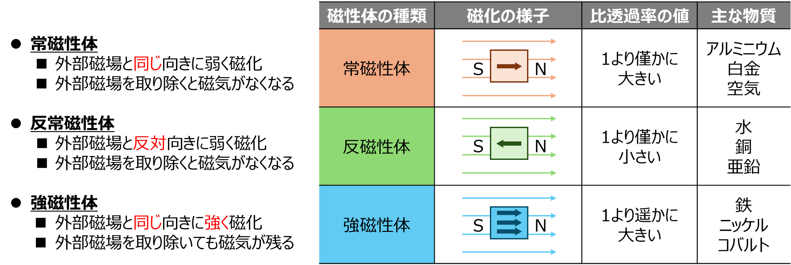
ヒステリシス損
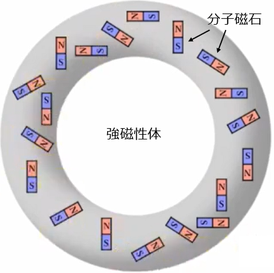
銅線を巻いて、コイルの状態にする。
その状態で電流を流すと右ねじの方向により、赤矢印の磁場が発生する。
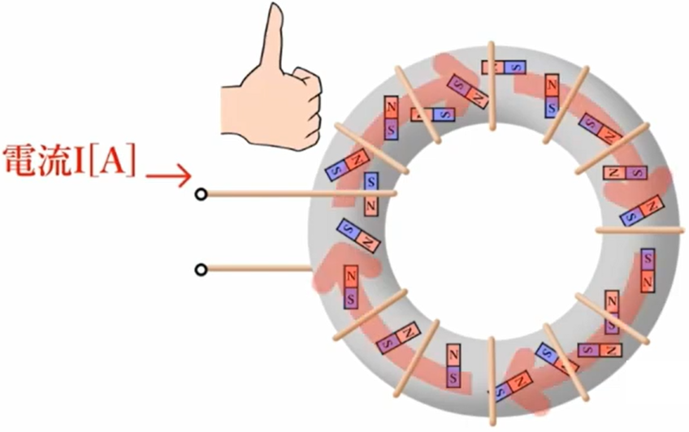
磁場の発生により、分子磁石の向きが揃ってくる。この磁性体が磁石の力を持ち始める。これを「磁化」という。
さらに大きな磁場をかけると、さらに多くの分子磁石が磁場方向にそろう。すべての分子磁石の向きが揃った場合、これを「磁気飽和」という。
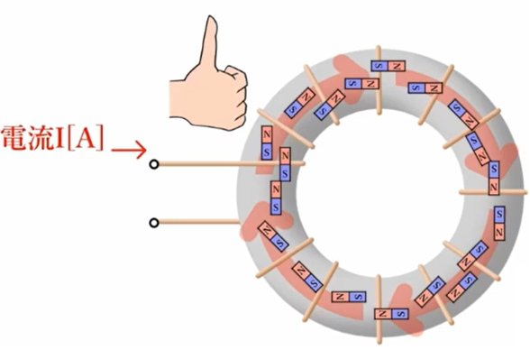
次に交流電圧をかけたとする。
磁界の方向が交互に変わり、分子磁石が回転する。
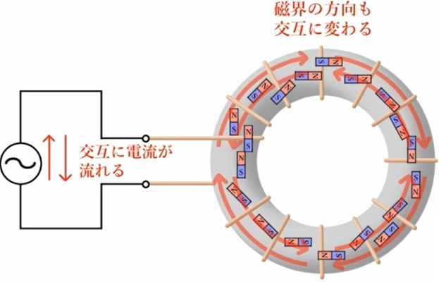
分子磁石の回転により、摩擦熱が発生し、電気エネルギーを消費する。
この消費するエネルギーのことを「ヒステリシス損」という。
コイルによって、磁場Hを発生させる。（右ねじの法則）
中の分子磁石が揃い、磁化して、「磁束密度B」になる。
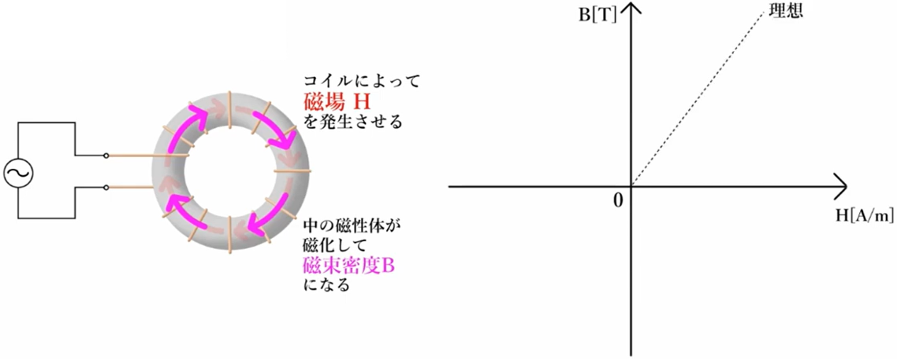
理想は磁場H[A/m]と磁束密度B[T]が線形であること。
しかし、実際には「磁気飽和」が発生する為、磁化が飽和した時点で、磁場Hを増やしても、磁束密度Bは増えていかなくなる。
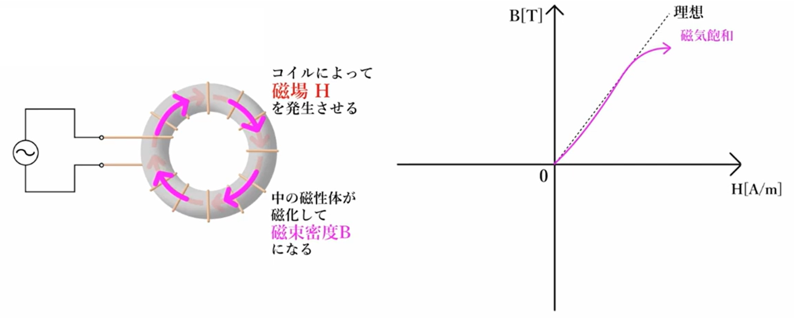
次にコイルによる磁場Hを0の状態にする。
そのとき、理想は磁性体の磁束密度が0になること。
しかし、そうはならない。
実際は、磁場Hを0にしても、磁性体には時期が残る。それを「残留磁気（記号：Br）」という。
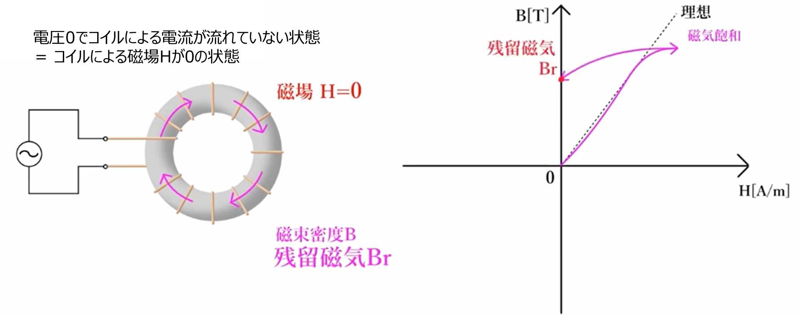
ここからさらに磁場を減らして、マイナス側に持っていき、磁性体の磁束密度B=0の状態にする。
そのときの磁場を「保持力（記号：Hc）」という
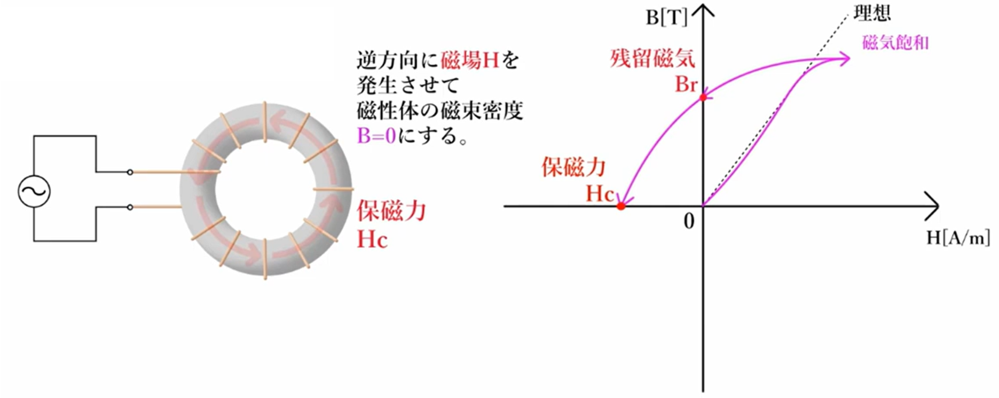
さらに磁場Hをマイナス側にもっていくと、磁性体も逆方向に磁束密度を持つようになる。
磁場Hのマイナス方向も同様に、途中で磁気飽和が起こり、磁束密度の増加が止まる。
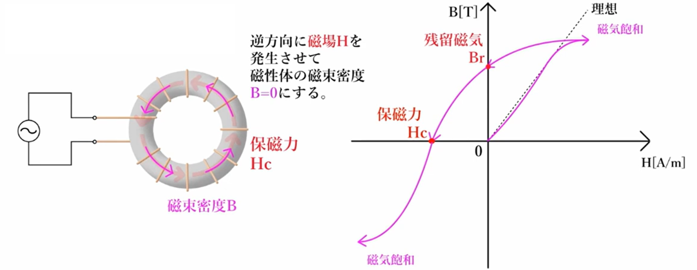
次に磁場をプラス側にかけていくと、磁性体の磁束密度Bも磁場Hにあわせて増えていく。
最終的には元の右上の位置に戻ってくる。ここで描かれた曲線を「ヒステリシス曲線」または「ヒステリシスループ」という。
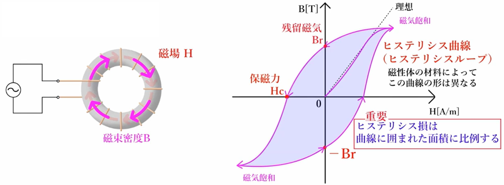
永久磁石は、永久に磁化している状態（外部磁場の影響を受けにくい）性質が望ましいため、残留磁気：「大」、保持力：「大」が望ましい。
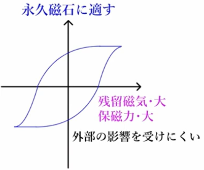
RIE
【マイクロローディング効果】
ドライエッチング(RIE)で掘る場合、パターン寸法が縮小するにつれて、エッチング速度はパターンの粗密性とアスペクト比に依存する傾向がある。
パターン密度が高い領域は、荒い領域に比べ、エッチング速度が遅くなる。